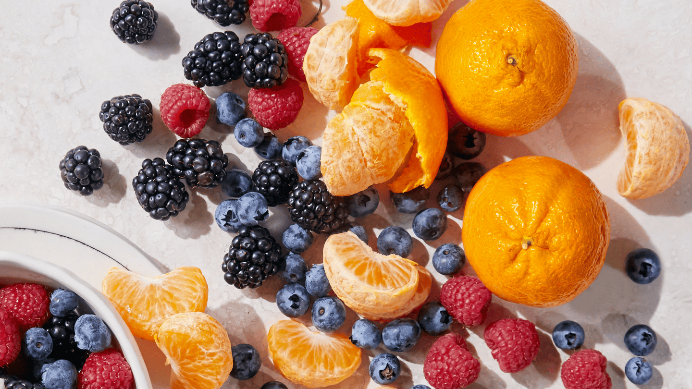

Where Science Happens
Phytochemicals & Nutrition Laboratory
Our laboratory at the Faculty of Natural Sciences, UAQ, is equipped for phytochemical analysis, bioavailability studies, and postharvest research.


HPLC Equipment
Sample preparation
General lab view
Cold storage room
Analytical balance
Spectrophotometer